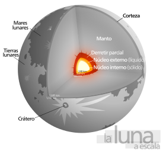
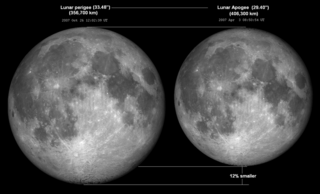

La Luna es el único satélite natural de la Tierra. Con un diámetro ecuatorial de 3476 km, es el quinto satélite más grande del sistema solar, mientras que en cuanto al tamaño proporcional respecto a su planeta es el satélite más grande: un cuarto del diámetro de la Tierra y 1/81 de su masa. Después de Ío, es, además, el segundo satélite más denso. Se encuentra en relación síncrona con la Tierra, siempre mostrando la misma cara hacia el planeta. El hemisferio visible está marcado con oscuros mares lunares de origen volcánico entre las brillantes montañas antiguas y los destacados astroblemas.
Varios mecanismos han sido propuestos para explicar la formación de la Luna hace 4527±10 millones de años. Esta edad se ha calculado según la datación del isótopo de las rocas lunares, entre 30 y 50 millones de años luego del origen del sistema solar.
En astronomía, una distancia lunar (LD) es la medida de la distancia desde la Tierra a la Luna. La distancia media entre la Tierra y la Luna es 384 400 kilómetros.16 La distancia real varía a lo largo de la órbita de la Luna.
Se realizan mediciones de alta precisión de la distancia a la Luna midiendo el tiempo que tarda la luz en viajar entre las estaciones LIDAR en la Tierra y los retrorreflectores colocados en la Luna.
| Astrologia | 3204439229 | @jeanparracabal1 |